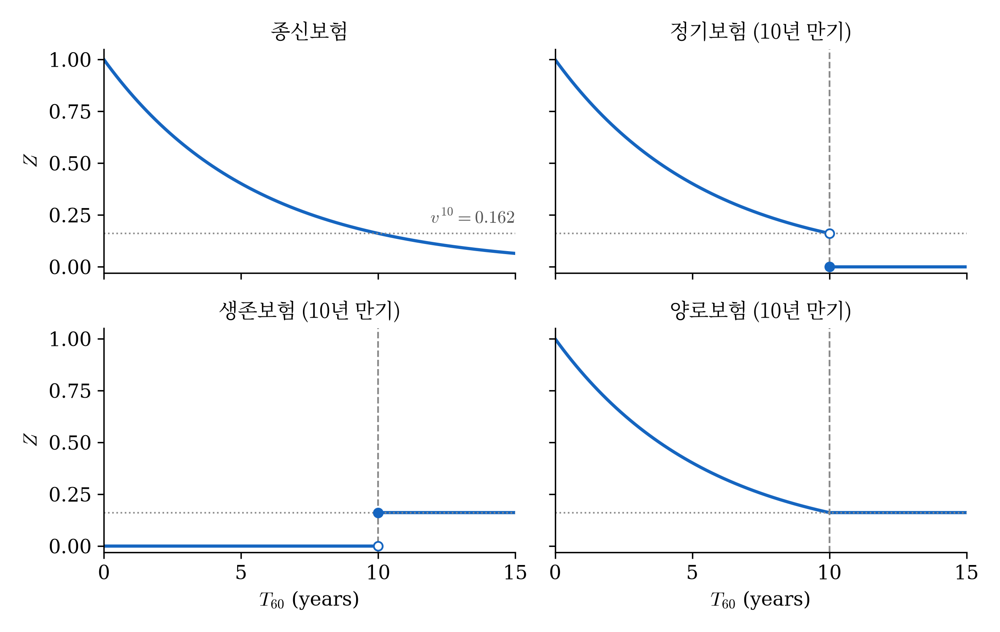
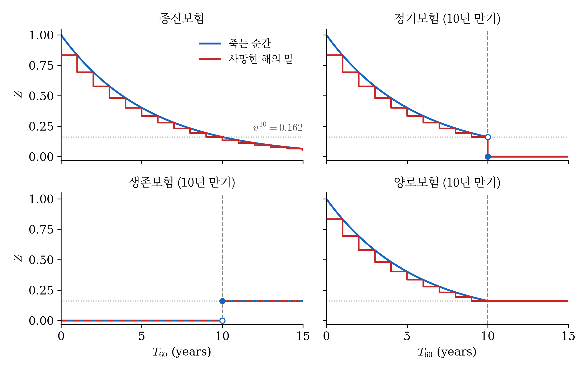
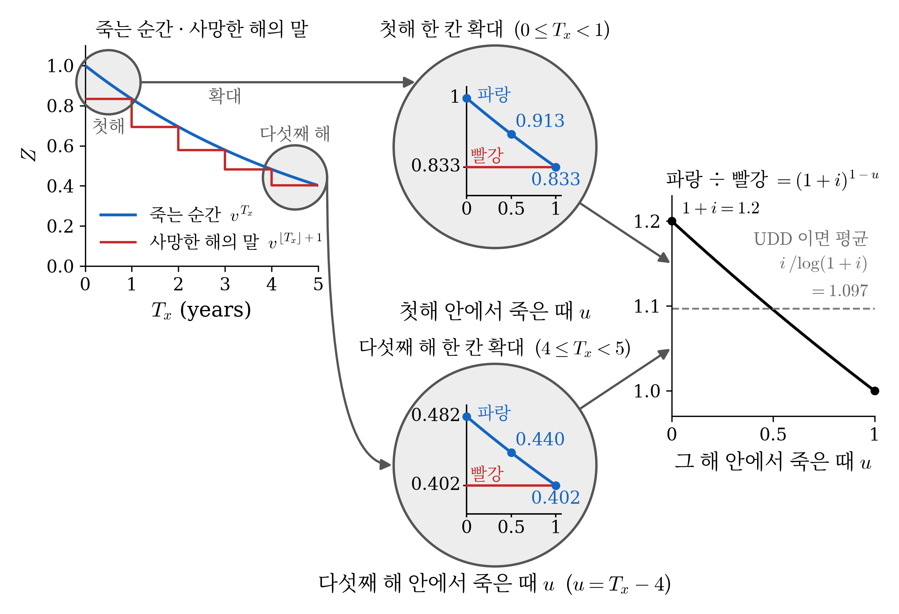

13wk-1: 계리사 기출문제 풀이 (6)
1. 강의영상
2. 연말에 지급하는 보험
A. 개념
- 복습: \(x = 60\), \(n = 10\), \(i = 0.2\) 일 때 네 \(Z\) 를 \(T_{60}\) 의 함수로 그리면 아래와 같다. 가로 점선은 \(v^{10} = 0.162\) 이다.
\[ Z_{\text{종신}} = v^{T_x}, \qquad Z_{\text{정기}} = v^{T_x}\, I(T_x < n), \qquad Z_{\text{생존}} = v^{n}\, I(T_x \ge n), \qquad Z_{\text{양로}} = v^{\min(T_x,\ n)} \]

- 실제 보험은 보험금을 죽은 뒤 곧 주지만, 시험 문제에서는 사망한 해의 말에 주는 경우가 많다.
- 예시: \(T_x=70.2\)에 죽었다면 사망 처리는 \(\lfloor T_x \rfloor=70\)으로 하고 보험금은 \(\lfloor T_x \rfloor+1=71\)에 준다.
- 예시: \(T_x=70\)에 정확하게 죽으면 사망 처리는 \(\lfloor T_x \rfloor=70\)으로 하고 보험금도 \(\lfloor T_x \rfloor+1=71\)에 준다.
- 이렇게 되면:
\[ Z_{\text{연말종신}} = v^{\lfloor T_x \rfloor + 1}, \qquad Z_{\text{연말정기}} = v^{\lfloor T_x \rfloor + 1}\, I(T_x < n), \qquad Z_{\text{생존}} = v^{n}\, I(T_x \ge n), \qquad Z_{\text{연말양로}} = v^{\min(\lfloor T_x \rfloor + 1,\ n)} \]

- UDD(\(F_x(t) = t\,F_x(1)\), \(x\) 는 정수, \(0 \le t \le 1\)) 하에서 아래가 성립한다. \[
\begin{aligned}
&\mathrm E[Z_{\text{종신}}] = \frac{i}{\log(1+i)}\,\mathrm E[Z_{\text{연말종신}}] \\
&\mathrm E[Z_{\text{정기}}] = \frac{i}{\log(1+i)}\,\mathrm E[Z_{\text{연말정기}}] \\
&\mathrm E[Z_{\text{양로}}] = \frac{i}{\log(1+i)}\,\mathrm E[Z_{\text{연말정기}}] + \mathrm E[Z_{\text{생존}}]
\end{aligned}
\]
(proof) \(U = T_x - \lfloor T_x \rfloor\) 라 하자. UDD 면 \(U\) 는 \((0, 1)\) 의 균등분포이고 \(\lfloor T_x \rfloor\) 와 독립이다.
\[ \begin{aligned} &\mathrm E[Z_{\text{종신}}] = \mathrm E[v^{T_x}] = \mathrm E[v^{\lfloor T_x \rfloor + U}] \\ &\quad = \mathrm E[v^{\lfloor T_x \rfloor + 1}\,v^{U-1}] = \mathrm E[v^{\lfloor T_x \rfloor + 1}\,(1+i)^{1-U}] \\ &\quad = \mathrm E[Z_{\text{연말종신}}\,(1+i)^{1-U}] = \mathrm E[Z_{\text{연말종신}}]\,\mathrm E[(1+i)^{1-U}] \quad (\because \text{독립}) \\ &\quad = \mathrm E[Z_{\text{연말종신}}] \int_0^1 (1+i)^{1-u}\,du = \frac{i}{\log(1+i)}\,\mathrm E[Z_{\text{연말종신}}] \end{aligned} \]
정기도 \(Z_{\text{정기}} = Z_{\text{연말정기}} \times (1+i)^{1-U}\) 이라(\(n\) 은 정수) 같은 방식이다. 양로는 \(Z_{\text{양로}} = Z_{\text{정기}} + Z_{\text{생존}}\) 이고, 만기에 주는 \(Z_{\text{생존}}\) 은 연속과 연말이 같아 곱하지 않는다.
- 그림으로 이해

B. 기출문제
# 예제 1 (2025 1차 31번) 연이율 \(i = 0\) 일 때, \(\mathrm E[Z_{\text{연말종신}}] - \mathrm E[Z_{\text{연말정기}}]\) (\(n = 10\)) 와 같은 것을 고르시오.
① 0 ② \(S_x(10)\) ③ \(F_x(10)\) ④ \(S_x(10) - S_x(11)\)
(풀이1) 구하는 것은 \(\mathrm E[Z_{\text{연말종신}}] - \mathrm E[Z_{\text{연말정기}}]\) (\(n = 10\)), 곧 사망한 해의 말에 주는 10년 거치 종신보험의 EPV 이다. \(i = 0\) 이면 \(v = \frac{1}{1+i} = 1\) 이므로 두 확률변수는 아래와 같다.
\[ \begin{aligned} &Z_{\text{연말종신}} = v^{\lfloor T_x \rfloor + 1} = 1 \\ &Z_{\text{연말정기}} = \begin{cases} v^{\lfloor T_x \rfloor + 1} = 1, & T_x < 10 \\ 0, & T_x \ge 10 \end{cases} \end{aligned} \]
그래서 둘의 차 \(Z_{\text{연말종신}} - Z_{\text{연말정기}}\) 는 \(T_x < 10\) 이면 \(1 - 1 = 0\), \(T_x \ge 10\) 이면 \(1 - 0 = 1\) 이다.
\[ \begin{aligned} &\mathrm E[Z_{\text{연말종신}}] - \mathrm E[Z_{\text{연말정기}}] = \mathrm E[Z_{\text{연말종신}} - Z_{\text{연말정기}}] \\ &\quad = 0 \times \Pr(T_x < 10) + 1 \times \Pr(T_x \ge 10) \\ &\quad = \Pr(T_x \ge 10) = S_x(10) \end{aligned} \] 따라서 구하는 값은 \(S_x(10)\) 이다.
(풀이2) \(x\) 세인 사람이 100 명 있다고 치고, 가입자를 받는다고 상상하자. (늘 그랫듯 가입 종이의 뒷면에는 \(Z\)값이 있다고 상상하자) 연이율 \(i = 0\) 이므로 사망시점에 주는 돈의 가치는 지금의 돈의 가치와 같다. 따라서 보험금이 1원이면 보험료도 1원이어야 한다.
- 연말종신: 100 명 모두 언젠가 죽으므로 모두 1 원을 받는다. \(\text{sum}(Z_{\text{연말종신}}) = 100\) 이다.
- 연말정기 (\(n = 10\)): 10년 안에 죽은 사람만 1 원을 받는다. \(\text{sum}(Z_{\text{연말정기}}) =\) \((10년 안에 죽은 사람 수)\) 이다.
따라서 둘의 차는 \((10년 넘게 산 사람 수)\) 이다. 따라서 \(\mathrm E[Z_{\text{연말종신}}] - \mathrm E[Z_{\text{연말정기}}] = S_x(10)\) 이다.
답: ② (\(S_x(10)\))
연이율 \(i = 0\) 일 때, \({}_{10\vert}A_x\) 와 같은 것을 고르시오.
① 0 ② \({}_{10}p_x\) ③ \({}_{10}q_x\) ④ \({}_{10\vert}q_x\)
시험지의 기호
| 시험지 | 뜻 | 우리 기호 |
|---|---|---|
| \({}_tp_x\) | \(x\) 세인 사람이 \(t\) 년 뒤에도 살아 있을 확률 | \(S_x(t) = \Pr(T_x > t)\) |
| \({}_tq_x\) | \(x\) 세인 사람이 \(t\) 년 안에 죽을 확률 | \(F_x(t) = \Pr(T_x \le t)\) |
| \({}_{u\vert t}q_x\) | \(x\) 세인 사람이 \(u\) 년은 살고 그다음 \(t\) 년 안에 죽을 확률. \(t = 1\) 이면 \({}_{u\vert}q_x\) 이다 | \(S_x(u) - S_x(u+t) = \Pr(u < T_x \le u+t)\) |
| \({}_{u\vert}A_x\) | \(u\) 년 거치 종신보험의 EPV. 사망한 해의 말에 준다 | \(\mathrm E[Z_{\text{연말종신}}] - \mathrm E[Z_{\text{연말정기}}]\) (\(n = u\)) |
#
# 예제 2 (2025 1차 34번) 아래의 조건을 이용하여 \(i = 0.045\) 일 때, \(\mathrm E[v^{\min(\lfloor T_{60} \rfloor + 1,\ 3)}]\) 을 구하시오.
(가) \(F_{60}(1) = 0.01\)
(나) \(i = 0.05\) 일 때, \(\mathrm E[v^{\min(\lfloor T_{60} \rfloor + 1,\ 3)}] = 0.86545\)
① 0.866 ② 0.878 ③ 0.890 ④ 0.902
(풀이) 구하는 것은 \(i = 0.045\) 일 때 \(\mathrm E[v^{\min(\lfloor T_{60} \rfloor + 1,\ 3)}]\) 이다. \(Z_{\text{연말양로}} = v^{\min(\lfloor T_{60} \rfloor + 1,\ 3)}\) 이라 셋째 해는 죽든 살든 \(v^3\) 이다. 모르는 것은 \(F_{61}(1)\) 하나이고, 이것은 \(i = 0.05\) 일 때의 값에서 나온다.
\[ \begin{aligned} &\mathrm E[Z_{\text{연말양로}}] = v\,F_{60}(1) + v^2\{S_{60}(1) - S_{60}(2)\} + v^3\,S_{60}(2) \quad (\because \Pr(\lfloor T_x \rfloor = k) = S_x(k) - S_x(k+1)) \\ &\quad = v\,F_{60}(1) + v^2\,S_{60}(1)\,F_{61}(1) + v^3\,S_{60}(1)\{1 - F_{61}(1)\} \quad (\because S_{60}(2) = S_{60}(1)\,S_{61}(1)) \\ &\quad = v\,F_{60}(1) + v^3\,S_{60}(1) + (v^2 - v^3)\,S_{60}(1)\,F_{61}(1) \end{aligned} \]
\(S_{60}(1) = 1 - 0.01 = 0.99\) 이고 \(i = 0.05\) 일 때 \(\mathrm E[Z_{\text{연말양로}}] = 0.86545\) 이므로
\[ \begin{aligned} &F_{61}(1) = \frac{\mathrm E[Z_{\text{연말양로}}] - v\,F_{60}(1) - v^3\,S_{60}(1)}{(v^2 - v^3)\,S_{60}(1)} \\ &\quad = \frac{0.86545 - 0.01/1.05 - 0.99/1.05^3}{(1/1.05^2 - 1/1.05^3) \times 0.99} \quad \left(\because v = \frac{1}{1.05}\right) \\ &\quad = \frac{0.86545 - 0.0095238 - 0.8551992}{0.0427600} \\ &\quad = \frac{0.0007270}{0.0427600} = 0.01700 \end{aligned} \]
이다. 따라서 \(S_{60}(2) = S_{60}(1)\{1 - F_{61}(1)\} = 0.99 \times (1 - 0.01700) = 0.97317\) 이고, \(i = 0.045\) 일 때는
\[ \begin{aligned} &\mathrm E[Z_{\text{연말양로}}] = v\,F_{60}(1) + v^2\{S_{60}(1) - S_{60}(2)\} + v^3\,S_{60}(2) \\ &\quad = \frac{0.01}{1.045} + \frac{0.99 - 0.97317}{1.045^2} + \frac{0.97317}{1.045^3} \quad \left(\because v = \frac{1}{1.045}\right) \\ &\quad = 0.95694 \times 0.01 + 0.91573 \times 0.01683 + 0.87630 \times 0.97317 \\ &\quad = 0.8778 \end{aligned} \]
이다. 따라서 구하는 값은 0.8778 이다.
답: ② (0.8778)
아래의 조건을 이용하여 \(i = 0.045\) 일 때, \(A_{60:\overline{3}\vert}\) 을 구하시오.
(가) \(q_{60} = 0.01\)
(나) \(i = 0.05\) 일 때, \(A_{60:\overline{3}\vert} = 0.86545\)
① 0.866 ② 0.878 ③ 0.890 ④ 0.902
시험지의 기호
| 시험지 | 뜻 | 우리 기호 |
|---|---|---|
| \(p_x\) · \(q_x\) | 기간이 1년이면 왼쪽 아래첨자를 뗀다. \(p_x = {}_1p_x\), \(q_x = {}_1q_x\) | \(S_x(1)\) · \(F_x(1)\) |
| \(A_{x:\overline{n}\vert}\) | 사망한 해의 말 또는 만기 \(n\) 에 1 을 주는 양로보험의 EPV | \(\mathrm E[Z_{\text{연말양로}}]\) |
#
# 예제 3 (2026 1차 33번) 아래의 조건을 이용하여 \(\mathrm V[Z_2]\) 를 구하시오.
(가) \(Z_1\) 은 \((70)\) 이 가입한 보험금 1인 10년 만기 기말급 정기보험의 현재가치를 나타내는 확률변수임
(나) \(Z_2\) 는 \((71)\) 이 가입한 보험금 1인 9년 만기 기말급 정기보험의 현재가치를 나타내는 확률변수임
(다) \(F_{70}(1) = 0.1\), \(i = 0.03\)
(라) \(\mathrm E[Z_1] = 0.6\), \(\mathrm V[Z_1] = 0.2\)
① 0.1972 ② 0.2177 ③ 0.2329 ④ 0.2533
(풀이1) 70세인 사람이 첫해에 죽으면 \(Z_1 = v\) 이고, 첫해를 살면 71세부터 9년 정기를 1년 늦게 받는 것이라 \(Z_1\) 은 \(v\,Z_2\) 와 분포가 같다. 따라서
\[ \begin{aligned} &\mathrm E[Z_1] = v\{F_{70}(1) + S_{70}(1)\,\mathrm E[Z_2]\} \\ &\mathrm E[Z_1^2] = v^2\{F_{70}(1) + S_{70}(1)\,\mathrm E[Z_2^2]\} \end{aligned} \]
이다. \(F_{70}(1) = 0.1\), \(S_{70}(1) = 0.9\), \(v = \frac{1}{1.03}\), \(\mathrm E[Z_1] = 0.6\), \(\mathrm E[Z_1^2] = 0.2 + 0.6^2 = 0.56\) 이므로
\[ \begin{aligned} &0.6 = \frac{0.1 + 0.9\,\mathrm E[Z_2]}{1.03} \quad \Rightarrow \quad \mathrm E[Z_2] = \frac{1.03 \times 0.6 - 0.1}{0.9} = 0.57556 \\ &0.56 = \frac{0.1 + 0.9\,\mathrm E[Z_2^2]}{1.03^2} \quad \Rightarrow \quad \mathrm E[Z_2^2] = \frac{1.03^2 \times 0.56 - 0.1}{0.9} = 0.54900 \\ &\mathrm V[Z_2] = \mathrm E[Z_2^2] - (\mathrm E[Z_2])^2 = 0.54900 - 0.57556^2 = 0.2177 \end{aligned} \]
이고, 구하는 값은 0.2177 이다.
(풀이2) 편의상 올해 (70)인 가입자를 10년 만기로 받고 내년에 (71)인 가입자를 9년 만기로 받았다고 생각하자.
| \(\lfloor T_{70} \rfloor + 1\) | 1 | 2 | 3 | \(\cdots\) | 8 | 9 | 10 |
|---|---|---|---|---|---|---|---|
| \(Z_1\) | \(v\) | \(v^2\) | \(v^3\) | \(\cdots\) | \(v^{8}\) | \(v^{9}\) | \(v^{10}\) |
| 확률 | \(0.1\) | \(0.9\,p_1\) | \(0.9\,p_2\) | \(\cdots\) | \(0.9\,p_7\) | \(0.9\,p_8\) | \(0.9\,p_9\) |
| \(\lfloor T_{71} \rfloor + 1\) | 1 | 2 | \(\cdots\) | 7 | 8 | 9 | |
| \(Z_2\) | \(v\) | \(v^2\) | \(\cdots\) | \(v^{7}\) | \(v^{8}\) | \(v^{9}\) | |
| 확률 | \(p_1\) | \(p_2\) | \(\cdots\) | \(p_7\) | \(p_8\) | \(p_9\) |
\[ \begin{aligned} &\mathrm E[Z_1] = v \times 0.1 + v^2 \times 0.9\,p_1 + \cdots + v^{10} \times 0.9\,p_9 = 0.6 \\ &\mathrm E[Z_1^2] = \mathrm V[Z_1] + (\mathrm E[Z_1])^2 = 0.2 + 0.6^2 = 0.56 \end{aligned} \]
이고, \(\mathrm E[Z_2] = v\,p_1 + v^2 p_2 + \cdots + v^9 p_9\) 이므로
\[ \begin{aligned} &\mathrm E[Z_1] = v \times 0.1 + 0.9\,v\,(v\,p_1 + \cdots + v^9 p_9) = v\{0.1 + 0.9\,\mathrm E[Z_2]\} \\ &\mathrm E[Z_1^2] = v^2 \times 0.1 + 0.9\,v^2\,(v^2 p_1 + \cdots + v^{18} p_9) = v^2\{0.1 + 0.9\,\mathrm E[Z_2^2]\} \end{aligned} \]
이다. \(v = \frac{1}{1.03}\) 이므로
\[ \begin{aligned} &\mathrm E[Z_2] = \frac{1.03 \times 0.6 - 0.1}{0.9} = 0.57556 \\ &\mathrm E[Z_2^2] = \frac{1.03^2 \times 0.56 - 0.1}{0.9} = 0.54900 \end{aligned} \]
따라서
\[ \mathrm V[Z_2] = \mathrm E[Z_2^2] - (\mathrm E[Z_2])^2 = 0.54900 - 0.57556^2 = 0.2177 \]
이다.
답: ② (0.2177)
아래의 조건을 이용하여 \(Var(Z_2)\) 를 구하시오.
(가) \(Z_1\) 은 (70) 이 가입한 보험금 1인 10년 만기 기말급 정기보험의 현재가치를 나타내는 확률변수임
(나) \(Z_2\) 는 (71) 이 가입한 보험금 1인 9년 만기 기말급 정기보험의 현재가치를 나타내는 확률변수임
(다) \(q_{70} = 0.1\), \(i = 0.03\)
(라) \(E(Z_1) = 0.6\), \(Var(Z_1) = 0.2\)
① 0.1972 ② 0.2177 ③ 0.2329 ④ 0.2533
시험지의 기호
| 시험지 | 뜻 | 우리 기호 |
|---|---|---|
| \(p_x\) · \(q_x\) | 기간이 1년이면 왼쪽 아래첨자를 뗀다. \(p_x = {}_1p_x\), \(q_x = {}_1q_x\) | \(S_x(1)\) · \(F_x(1)\) |
| \(E\) · \(Var\) | 평균 · 분산 | \(\mathrm E\) · \(\mathrm V\) |
| \(Z_1\) | 이 문항이 정한 현가 확률변수 | \(Z_{\text{연말정기}} \text{ (70세, 10년)}\) |
| \(Z_2\) | 이 문항이 정한 현가 확률변수 | \(Z_{\text{연말정기}} \text{ (71세, 9년)}\) |
#
# 예제 4 (2026 1차 31번) 아래의 조건을 이용하여 \(\mathrm E[v^{\min(T_{80},\ 2)}]\) 를 구하시오.
(가) \(F_{80}(1) = 0.0074\), \(F_{81}(1) = 0.0083\)
(나) UDD(\(F_x(t) = t\,F_x(1)\), \(x\) 는 정수, \(0 \le t \le 1\))를 가정함
(다) \(i = 0.03\)
(라) \(\log 1.03 = 0.0296\)
① 0.943 ② 0.954 ③ 0.961 ④ 0.969
(풀이) 구하는 것은 \(\mathrm E[v^{\min(T_{80},\ 2)}] = \mathrm E[Z_{\text{정기}}] + \mathrm E[Z_{\text{생존}}]\) 이다. UDD 에서는 \(\mathrm E[Z_{\text{정기}}] = \frac{i}{\log(1+i)}\,\mathrm E[Z_{\text{연말정기}}]\) 이고, \(\mathrm E[Z_{\text{연말정기}}]\) 는 아래와 같다.
\[ \begin{aligned} &\mathrm E[Z_{\text{연말정기}}] = v\,F_{80}(1) + v^2\{S_{80}(1) - S_{80}(2)\} \quad (\because \Pr(\lfloor T_x \rfloor = k) = S_x(k) - S_x(k+1)) \\ &\quad = v\,F_{80}(1) + v^2\,S_{80}(1)\,F_{81}(1) \quad (\because S_{80}(2) = S_{80}(1)\,S_{81}(1)) \\ &\quad = \frac{0.0074}{1.03} + \frac{0.9926 \times 0.0083}{1.03^2} \quad \left(\because v = \frac{1}{1.03},\ S_{80}(1) = 1 - 0.0074 = 0.9926\right) \\ &\quad = 0.0071845 + 0.0077657 = 0.014950 \end{aligned} \]
\(S_{81}(1) = 1 - 0.0083 = 0.9917\) 이고 \(\log 1.03 = 0.0296\) 이므로 \(\mathrm E[Z_{\text{양로}}]\) 는 아래와 같다.
\[ \begin{aligned} &\mathrm E[Z_{\text{양로}}] = \mathrm E[Z_{\text{정기}}] + \mathrm E[Z_{\text{생존}}] \\ &\quad = \frac{i}{\log(1+i)}\,\mathrm E[Z_{\text{연말정기}}] + v^2\,S_{80}(2) \quad \left(\because \mathrm E[Z_{\text{정기}}] = \frac{i}{\log(1+i)}\,\mathrm E[Z_{\text{연말정기}}],\ \mathrm E[Z_{\text{생존}}] = v^n S_x(n)\right) \\ &\quad = \frac{0.03}{0.0296} \times 0.014950 + \frac{0.9926 \times 0.9917}{1.03^2} \quad (\because S_{80}(2) = S_{80}(1)\,S_{81}(1)) \\ &\quad = 0.015152 + 0.927855 = 0.9430 \end{aligned} \]
따라서 구하는 값은 0.9430 이다.
답: ① (0.9430)
아래의 조건을 이용하여 \(\bar A_{80:\overline{2}\vert}\) 를 구하시오.
(가) \(q_{80} = 0.0074\), \(q_{81} = 0.0083\)
(나) UDD(\({}_tq_x = t \cdot q_x\), \(x\) 는 정수, \(0 \le t \le 1\))를 가정함
(다) \(i = 0.03\)
(라) \(\ln 1.03 = 0.0296\)
① 0.943 ② 0.954 ③ 0.961 ④ 0.969
시험지의 기호
| 시험지 | 뜻 | 우리 기호 |
|---|---|---|
| \({}_tq_x\) | \(x\) 세인 사람이 \(t\) 년 안에 죽을 확률 | \(F_x(t) = \Pr(T_x \le t)\) |
| \(p_x\) · \(q_x\) | 기간이 1년이면 왼쪽 아래첨자를 뗀다. \(p_x = {}_1p_x\), \(q_x = {}_1q_x\) | \(S_x(1)\) · \(F_x(1)\) |
| \(\ln\) | 자연로그 | \(\log\) |
| \(\bar A_{x:\overline{n}\vert}\) | 죽는 순간 또는 만기 \(n\) 에 1 을 주는 양로보험의 EPV | \(\mathrm E[Z_{\text{양로}}]\) |
#